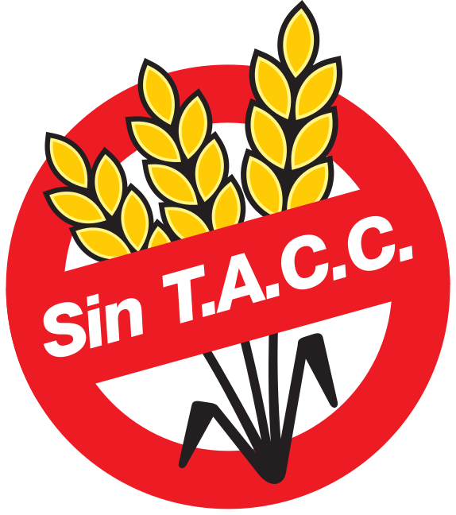
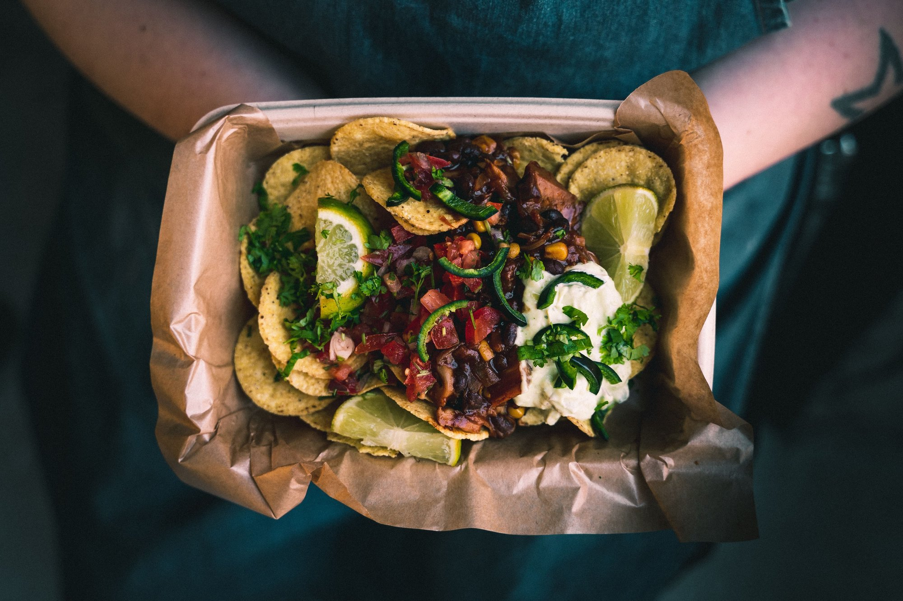
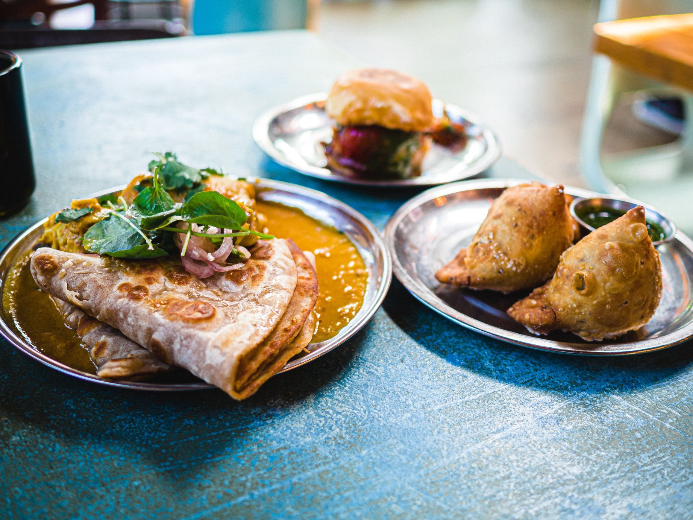

Comida Asiatica
La Gastronomía de Asia corresponde a un conjunto de gastronomías asociadas a los países y etnias de Asia. Casi siempre se emplea el término generalizando tanto a las gastronomías del Este de Asia como a las del Sureste Asiático. Tiene como principal vía de influencia tanto el Océano Índico como el Océano Pacífico.
Sin TACC

La dieta sin gluten consiste en eliminar de forma estricta de la alimentación todos los productos que contengan o se cocinen con trigo, centeno, cebada y avena, o cualquiera de sus variedades e híbridos, y productos derivados, evitando contaminaciones inadvertidas y todo tipo de transgresiones dietéticas.
Street Food

Los lugares del mundo con mayor historia de comida callejera son los países en Latinoamérica, África y Asia. Se tienen registros de comida callejera desde la Grecia Antigua, como los pequeños pescados fritos que vendía en la calle. También en Pompeya se descubrieron rastros de vendedores de comida.
Comida del Mundo

Viajar es sinónimo de descubrir algo nuevo, por eso si viajas deberías probar todas las comidas del mundo que te pongan por delante y no acabar en el típico restaurante de comida rápida de siempre. Entendemos que a veces parece un poco arriesgado probar según que platos que desconocemos, hoy tienes la oportunidad de conocer 20 de ellos, así no tienes excusa la próxima vez que te los ofrezcan.